10 部片单 · 恐怖 / 科幻 / 惊悚 / 悬疑 / 剧情
| # | 片名 | 类型 | 评分 / 状态 |
|---|---|---|---|
| 01 | 天劫余生 | 剧情 / 冒险（美国 · 安第斯雪线上的七十二天） | 8.1 / 63% / 56 |
| 02 | 垂直极限 | 动作 / 惊悚（美国 / 德国 · K2 上的一次营救） | 7.7 / 49% / 48 |
| 03 | 南极大冒险 | 剧情 / 冒险（美国 · 八条雪橇犬的半年） | 8.7 / 73% / 64 |
| 04 | 荒野生存 | 剧情 / 传记（美国 · 一个年轻人走进阿拉斯加） | 8.6 / 83% / 73 |
| 05 | 北壁 | 剧情 / 历史（德国 / 奥地利 / 瑞士 · 艾格峰北壁上的四个人） | 8.6 / 84% / 67 |
| 06 | 冷冻 | 恐怖 / 惊悚（美国 · 一条停在半空的缆车） | 6.3 / 63% / 43 |
| 07 | 人狼大战 | 惊悚 / 剧情（美国 / 英国 · 阿拉斯加雪原上的七个男人） | 6.5 / 79% / 64 |
| 08 | 八恶人 | 悬疑 / 西部（美国 · 暴风雪里的一间杂货店） | 8.7 / 75% / 68 |
| 09 | 荒野猎人 | 剧情 / 冒险（美国 · 1820 年代的雪原与河） | 7.9 / 78% / 76 |
| 10 | 绝命海拔 | 剧情 / 灾难（美国 / 英国 / 冰岛 · 1996 年珠峰的那个五月） | 7.5 / 73% / 64 |
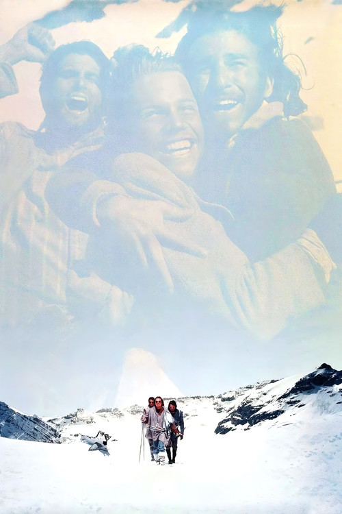
天劫余生 Alive
「明天我们就走出这座山。」
剧情梗概
1972 年 10 月 13 日，一支乌拉圭橄榄球队包机去智利比赛，飞机撞上安第斯山脊，断成两截。四十多人里活下来二十几个，落在海拔三千多米的雪线上。他们等了八天，收音机里传来消息：搜救停止了。食物只剩几块巧克力和几瓶酒。活下来的人做了那个后来被讨论了很多年的决定——用死去同伴的身体活下去。七十二天之后，两个人翻过了山。
亮点
- 弗兰克·马歇尔导演，改编自皮尔斯·保罗·里德 1974 年的纪实作品《活着：安第斯幸存者的故事》，剧本由约翰·帕特里克·尚利写。
- 成本约 3200 万美元，北美票房约 3670 万美元，全球约 8500 万美元；上映当年在美国引发过一场关于道德边界的公开讨论。
- 剧组真的在安第斯山海拔四千米以上拍了数周，残骸与雪地场景大部分是实景；演员在拍摄期间减重，片里那种饥饿状态有相当部分是真实的。
- 伊桑·霍克演南多·帕拉多，最后走出雪山的那个人；乔什·汉弥尔顿演罗伯托·卡内萨，全片最先说出「要活就得吃」的人。
- 真实事件里幸存者在 1972 年 12 月 23 日获救，一共 16 人；帕拉多的母亲与妹妹都在空难中丧生，他是在找到母亲遗体之后才决定往外走的。
- 豆瓣 8.1 / 烂番茄 63% / Metacritic 56 / IMDb 7.1：本期上映最早的一部（1993），也是本期唯一一部改编自二十世纪真实空难的电影。
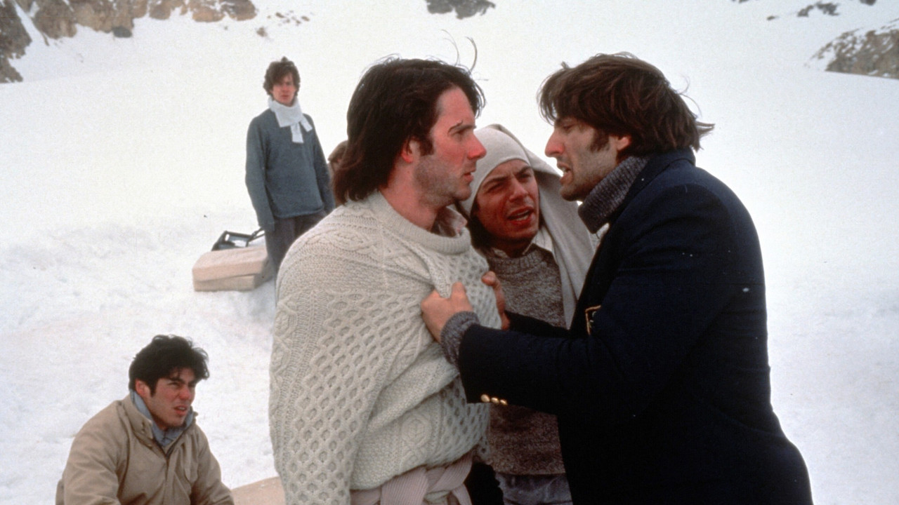
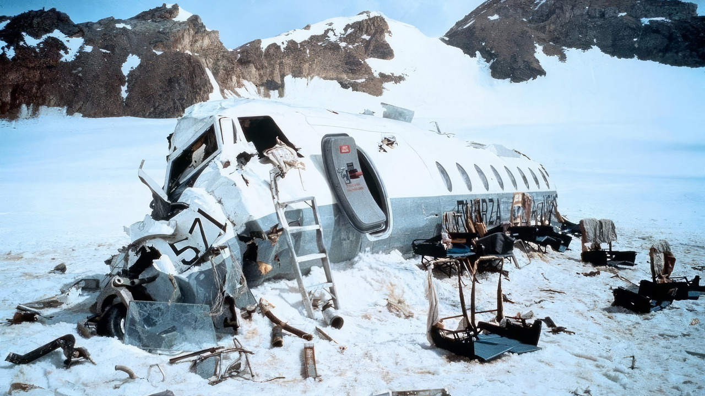
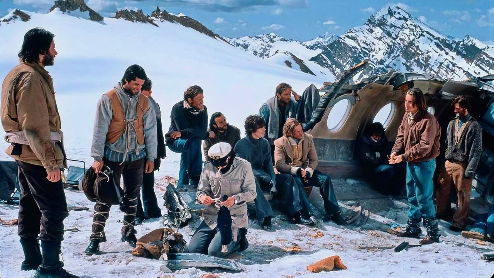
导演与主创 · 他们的历史作品
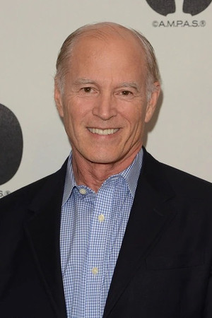
 回到未来
回到未来 侏罗纪世界
侏罗纪世界 回到未来2
回到未来2 本杰明·巴顿奇事
本杰明·巴顿奇事
 人类清除计划
人类清除计划 前目的地
前目的地 千钧一发
千钧一发 险恶
险恶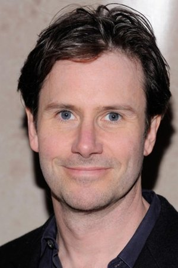
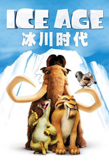
冰川时代 谍影重重
谍影重重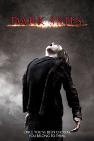
黑暗天际短评（轻微剧透）
轻微剧透：真正的转折不在他们做了那个决定，在他们从收音机里听到搜救已经取消——那一刻之后，等待不再是选项，人必须自己往下走。轻微剧透：马歇尔把这部片拍得很「日常」：分配食物、融化雪水、把死者排好、在机舱里开会，这些琐碎让它没有变成奇观。结尾那句旁白说到「他们从未解释过那七十二天」，是全片唯一一次承认这件事讲不完。
为什么值得一看
想看「真实事件能被拍到多克制」的人；能接受人物众多、前半段节奏慢、雪山实景让人发冷的观众。R 级，含事故伤情与同类相食相关情节，建议高中以上观看。内地未映，流媒体可看。看完想继续：《荒野生存》《荒野猎人》《南极大冒险》。
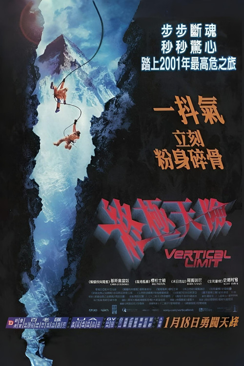
垂直极限 Vertical Limit
「氧气只够一个人用。是带上去，还是留给自己。」
剧情梗概
开场那场戏里，父亲把绳子割断了——为了让儿子和女儿活下来。三年后，妹妹安妮去登 K2，赞助这次攀登的富豪艾略特·沃恩一心要抢时间登顶。雪崩之后，三个人被困在海拔八千米的冰裂缝里。已经不再爬山的哥哥彼得，只能重新组队上去。
亮点
- 马丁·坎贝尔导演（《007之黄金眼》《佐罗的面具》），剧本由罗伯特·金写；这是千禧年前后好莱坞登山片的代表作。
- 成本约 7500 万美元，全球票房约 2.157 亿美元，是 2000 年全球票房第 17 名。
- 大量镜头在巴基斯坦与新西兰皇后镇实拍；剧组从澳大利亚租了贝尔 212 直升机，涂成卡其绿色冒充巴基斯坦空军。
- 克里斯·奥唐纳演彼得，比尔·帕克斯顿演富豪沃恩；斯科特·格伦演那位留下来的老登山家，罗宾·唐尼演被困的妹妹安妮。
- 自由攀登名将 Alex Honnold 后来公开说过，开场那场戏「大概是好莱坞所有攀岩片里最糟糕的一场」——这句评价本身也成了影迷之间的著名段子。
- 豆瓣 7.7 / 烂番茄 49% / Metacritic 48 / IMDb 6.0：本期专业评价最低，华语观众明显高于欧美影评。
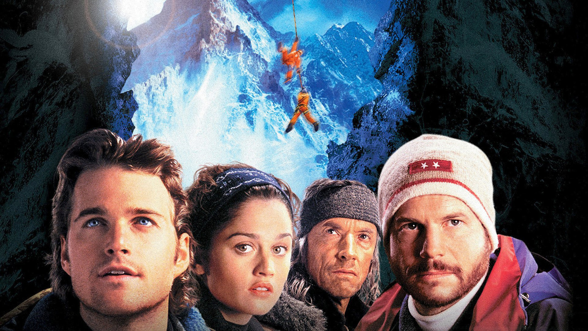
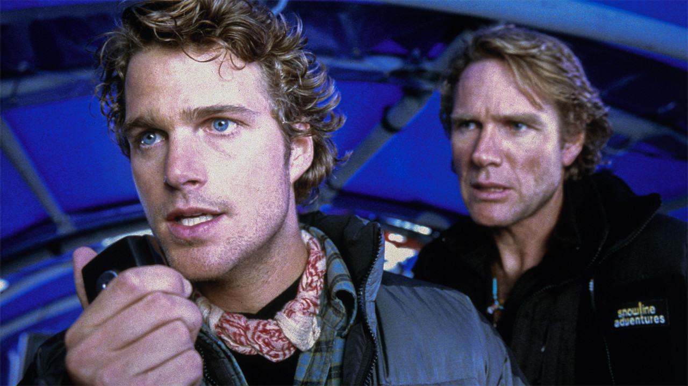
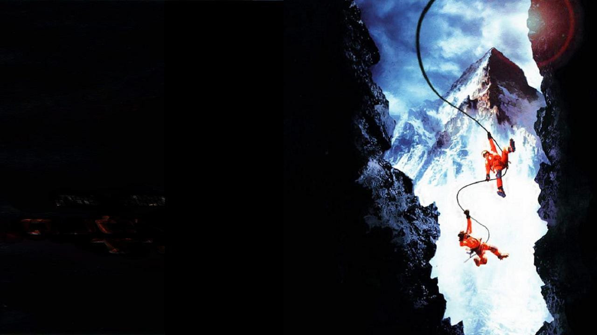
导演与主创 · 他们的历史作品
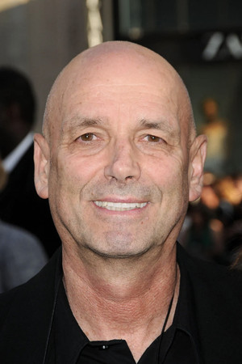
 007：大战皇家赌场
007：大战皇家赌场 绿灯侠
绿灯侠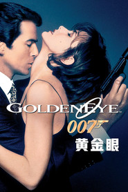
007：黄金眼 佐罗的面具
佐罗的面具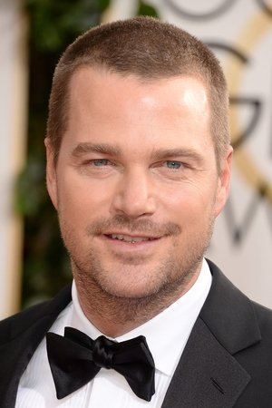
 蝙蝠侠与罗宾
蝙蝠侠与罗宾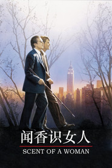
闻香识女人 永远的蝙蝠侠
永远的蝙蝠侠
 泰坦尼克号
泰坦尼克号 明日边缘
明日边缘 阿波罗13号
阿波罗13号 夜行者
夜行者短评（轻微剧透）
轻微剧透：真正的转折在硝化甘油出场——从那一刻起，这部片不再假装自己是写实攀登片，而是一部关于「还剩几步能炸」的动作片。轻微剧透：坎贝尔最有效的一处是把救援拆成三段时间：组队、上爬、以及最后那段必须在天黑前做出的决定。结尾沃恩与老人同归于尽的安排很工整，工整到你会意识到它一直在往那个方向走。
为什么值得一看
想看「登山片能把高度拍成压力」的人；能接受剧情逻辑有硬伤、配角死法离谱、主角有明显光环的观众。PG-13，含坠落与雪崩画面，恐高者慎看。内地公映过，流媒体可看。看完想继续：《北壁》《绝命海拔》《天劫余生》。
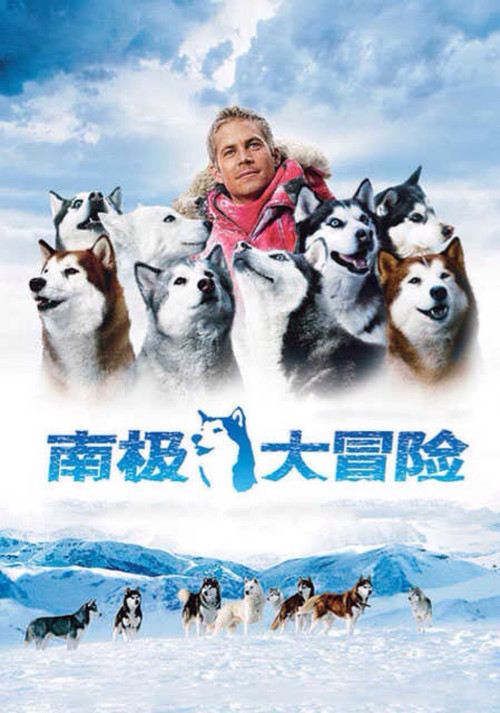
南极大冒险 Eight Below
「它们还在那儿。我们还在这里。」
剧情梗概
南极科考站。向导杰里·谢泼德带着八条雪橇犬，送一位教授去搜寻陨石。暴风雪逼近，全站必须撤离，飞机装不下狗，只能把它们锁在链子上。杰里以为几天就回来，结果一等就是半年。八条狗在零下几十度的极夜里，自己挣断了链子。
亮点
- 弗兰克·马歇尔导演——本期第 1 部《天劫余生》也是他导的，两部相隔十三年，讲的都是「人被留在雪里之后」。
- 成本约 4000 万美元，北美票房约 8180 万美元，全球约 1.2 亿美元，是当年家庭片的票房黑马之一。
- 狗的戏由真实的雪橇犬与训练员完成，部分镜头在格陵兰与加拿大实地拍摄；八条狗各有名字，片尾给出了它们的演员表。
- 保罗·沃克演向导杰里，一个把八条狗当同事的人；布鲁斯·格林伍德演教授戴维斯·麦克拉伦，两人的关系是从「我欠你一条命」开始的。
- 影片改编自 1958 年日本南极观测队的真实事件（那次事件后来也被改编成《南极物语》），片尾字幕向当年的观测队致意。
- 豆瓣 8.7 / 烂番茄 73% / Metacritic 64 / IMDb 7.3：本期豆瓣并列最高，与《八恶人》同为 8.7。
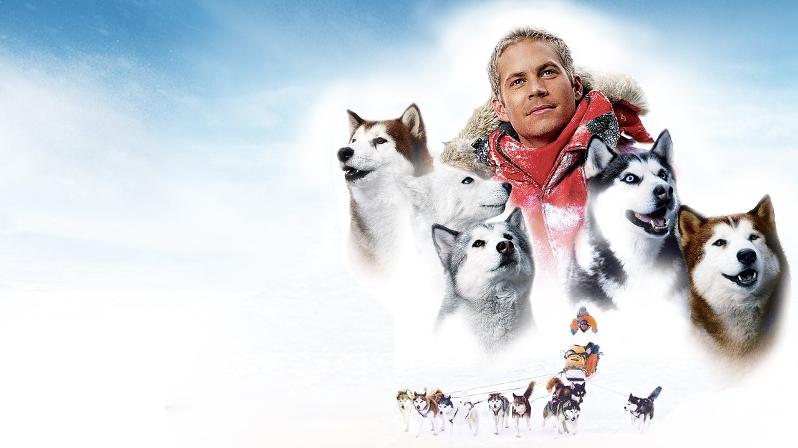
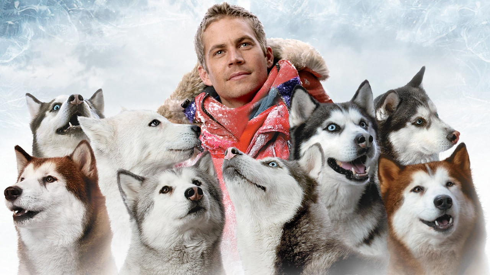
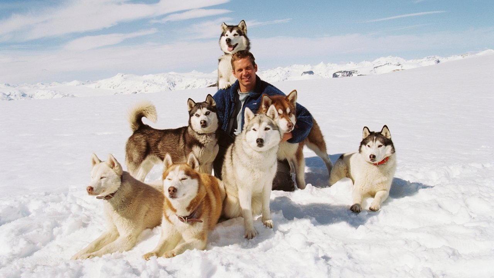
导演与主创 · 他们的历史作品
回到未来侏罗纪世界回到未来2本杰明·巴顿奇事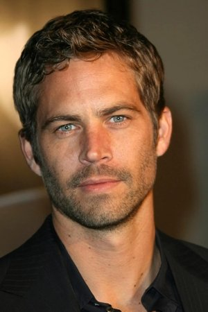
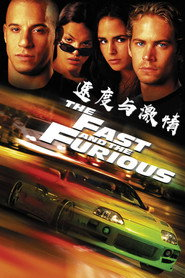
速度与激情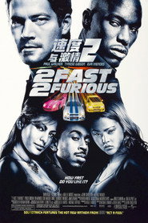
速度与激情2 速度与激情7
速度与激情7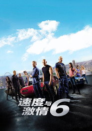
速度与激情6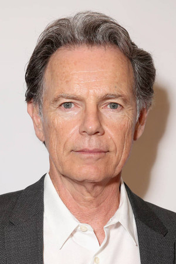
 我，机器人
我，机器人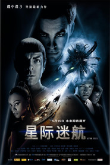
星际迷航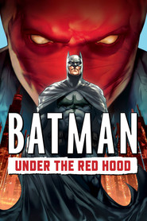
蝙蝠侠：红影迷踪短评（轻微剧透）
轻微剧透：真正的转折在杰里回到美国之后——他没能立刻回去，而那半年不是「等待」，是一次被不断延长的放弃。轻微剧透：这部片最狠的一处是没有旁白去解释狗在想什么，只有行为：分担、守夜、走、回头。结尾玛雅把杰里带到老杰克倒下的地方那段，是全片唯一一次让动物替人做决定。
为什么值得一看
想看「动物片怎么不靠拟人化打动人」的人；能接受中段抒情偏多、个别桥段煽情、狗受伤的情节会让人难受的观众。PG，含动物受伤与危机画面，建议小学以上在家长陪同下观看。内地公映过，流媒体可看。看完想继续：《天劫余生》《荒野生存》《人狼大战》。
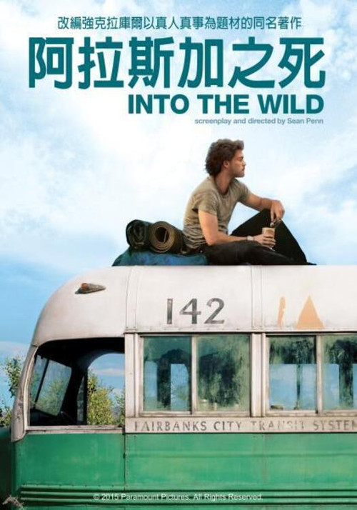
荒野生存 Into the Wild
「幸福只有在分享时才真实。」
剧情梗概
1992 年，克里斯托弗·麦坎德利斯从名校毕业，把两万四千美元存款捐给慈善机构，剪掉证件，给自己改名「亚历山大·超级游民」，一路搭车往北。路上他遇见过一对露营的夫妻、一个种地的老兵、一个在河上漂流的女孩。最后他一个人走进阿拉斯加的荒野，在一辆废弃巴士里住下。
亮点
- 西恩·潘自编自导并任制片，改编自乔恩·克拉考尔 1996 年的同名非虚构作品；本片拿到奥斯卡两项提名（最佳男配角、最佳剪辑）。
- 成本约 1500 万美元，全球票房约 5660 万美元；这是西恩·潘导演生涯里评价最高的一部。
- 埃米尔·赫希为这个角色减重约 40 磅；片中大量自然光与实景，剧组真的把一辆巴士运到了阿拉斯加的指定地点。
- 哈尔·霍尔布鲁克演老兵罗恩·弗朗兹，凭这个角色在 82 岁拿到他唯一一次奥斯卡最佳男配角提名。
- 配乐由珍珠果酱乐队主唱艾迪·维达写了六首原创歌曲；那首《Guaranteed》拿了金球奖最佳原创歌曲。
- 豆瓣 8.6 / 烂番茄 83% / Metacritic 73 / IMDb 8.0：本期 IMDb 并列最高，与《荒野猎人》同为 8.0。
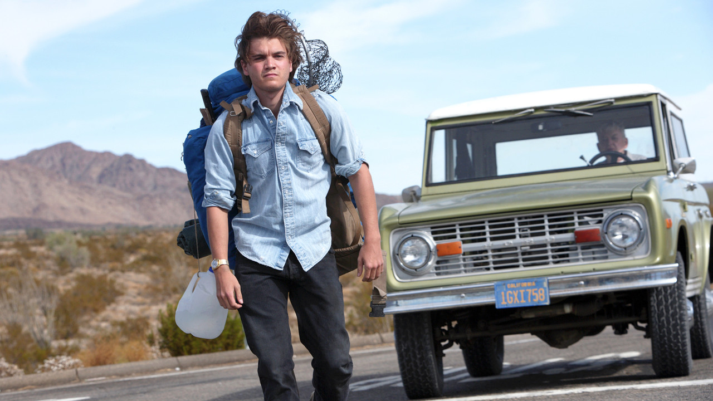
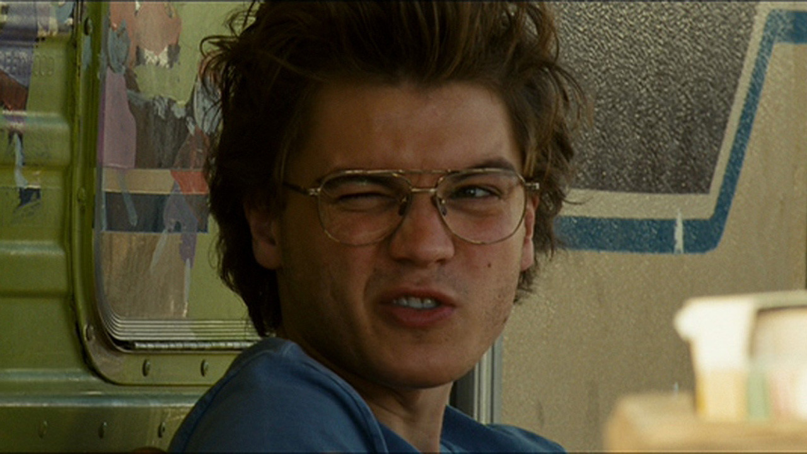
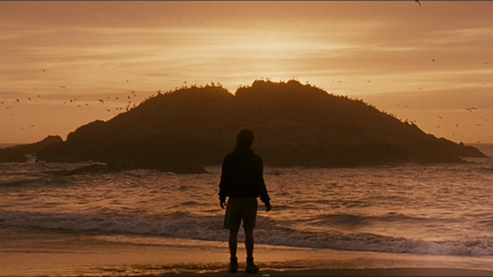
导演与主创 · 他们的历史作品

 神秘河
神秘河 心理游戏
心理游戏 21克
21克 白日梦想家
白日梦想家
 邻家女优
邻家女优 好莱坞往事
好莱坞往事 极速赛车手
极速赛车手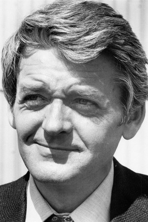
 鬼作秀
鬼作秀 林肯
林肯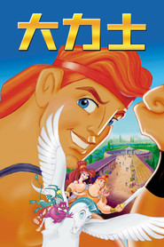
大力士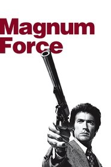
紧急搜捕令短评（轻微剧透）
轻微剧透：真正的转折在他想走回去的时候——河涨了，来时过不去的地方现在也过不去，他这才明白那条河不是边界，是期限。轻微剧透：潘最聪明的一处是把结局放在前面告诉你：你从头就知道他没能出来，所以这一路遇到的人全都有了重量。结尾那张躺在巴士里的照片，是全片唯一一次把「他到底找到了什么」留给你自己判断。
为什么值得一看
想看「一个人为什么非要离开」的人；能接受 148 分钟偏长、叙事打乱时间线、主角的选择会让你又佩服又生气的观众。R 级，含少量粗口与危险画面，建议高中以上观看。内地未映，流媒体可看。看完想继续：《荒野猎人》《天劫余生》《涉足荒野》。
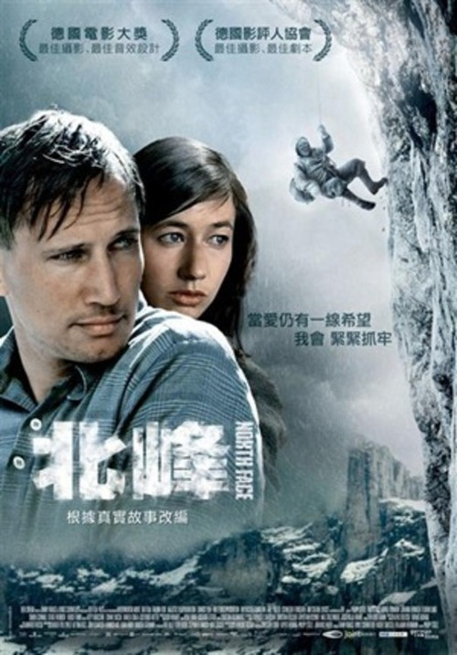
北壁 North Face
「给我一套装备，我还能爬。」
剧情梗概
1936 年，柏林奥运会之前。德国的两名年轻登山者托尼·库尔茨与安迪·辛特斯托塞尔要去攻艾格峰北壁——那面墙此前从没有人上去过，也没有人活着下来。山下的旅馆里坐着记者和游客，他们端着酒看这场攀登。天气变了，四个人卡在墙上，往上不行，往下也不行。
亮点
- 菲利普·施特尔茨自编自导，改编自 1936 年真实的艾格峰北壁山难；片中的救援线与媒体线是虚构并线，攀登过程基本照史实。
- 影片在瑞士阿尔卑斯山实地拍摄，演员在真实岩壁上完成了大量攀登镜头；本片入围洛迦诺电影节主竞赛。
- 本诺·菲尔曼演托尼·库尔茨，弗洛里安·卢卡斯演安迪；乌尔里希·图库尔演那位把山难当新闻做的记者。
- 真实事件里，安迪·辛特斯托塞尔走出的那条横向穿越路线后来以他命名；库尔茨在救援者上方几米处耗尽体力死去的照片，是登山史上最著名的一张。
- 影片把「旅馆里的人在鼓掌」和「墙上的人在下坠」剪在一起——这才是它真正想说的东西。
- 豆瓣 8.6 / 烂番茄 84% / Metacritic 67 / IMDb 7.4：本期烂番茄最高，也是本期唯一的德语片。
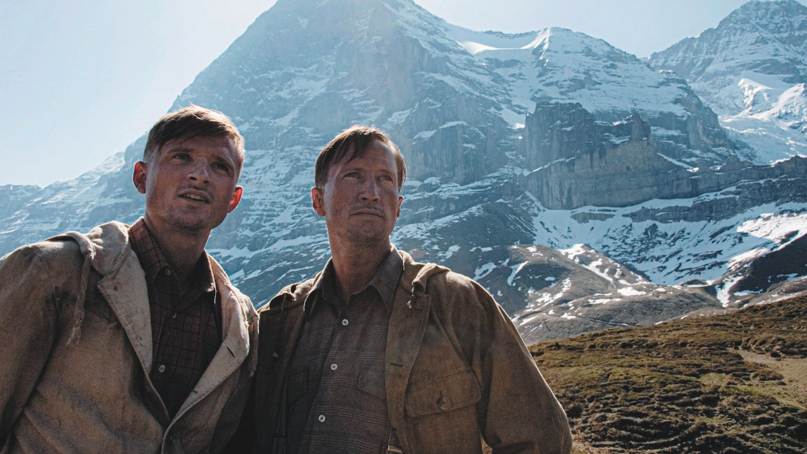
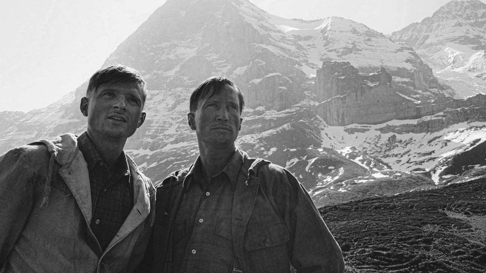
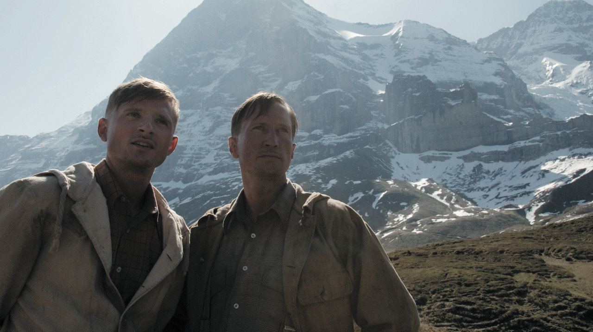
导演与主创 · 他们的历史作品
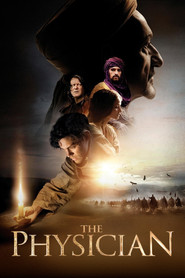
神医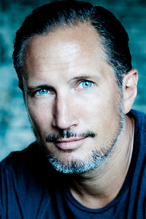
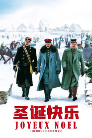
圣诞快乐极速赛车手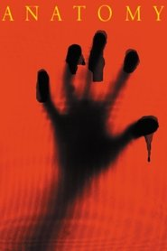
解剖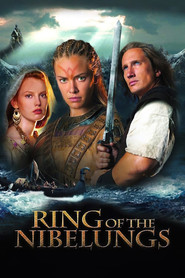
尼伯龙根的指环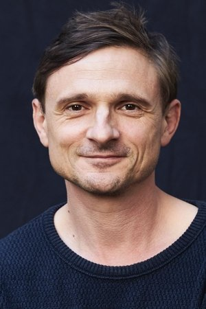
 布达佩斯大饭店
布达佩斯大饭店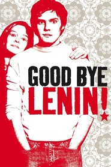
再见列宁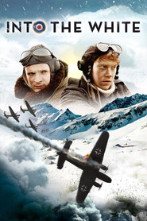
白色严冬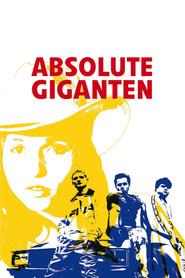
告别汉堡短评（轻微剧透）
轻微剧透：真正的转折不在天气变坏，在他们决定下撤——上攀是比赛，下撤是求生，而那面墙只对上攀的人留过路。轻微剧透：这部片最难受的一段是救援队到了却差几米：绳子接不上，只能看着。结尾那句被人反复引用的遗言，是全片唯一一次让「国家的荣誉」这件事显得廉价。
为什么值得一看
想看「登山片能拍到多冷酷」的人；能接受德语对白、人物众多、后半段几乎不忍看的观众。含坠崖与冻伤画面，建议高中以上观看。内地未映。看完想继续：《垂直极限》《绝命海拔》《天劫余生》。
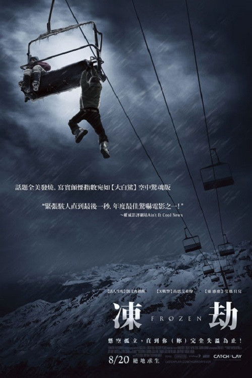
冷冻 Frozen
「滑雪场要封山五个月。我们还挂在上面。」
剧情梗概
三个人为了最后滑一趟，塞钱给缆车操作员上了山。操作员临时换班，接班的人以为山上没人，直接拉闸下班——滑雪场要封山五个月。三个人挂在离地十几米的缆车上，天黑了，温度掉到零下，而雪地里有东西闻到了血。
亮点
- 亚当·格林自编自导，他的成名作是砍杀片《短柄斧》；本片是他第一次不靠血浆、靠环境做恐怖。
- 成本约 150 万美元，全球票房约 380 万美元；北美只卖了 24 万美元，主要靠海外与碟片回本。
- 全片几乎实拍：演员真的被吊在犹他州一座山的缆车上，离地五十英尺，剧组雇来的摄影团队不敢上，最后是导演和摄影指导自己上去拍的。
- 艾玛·贝尔演帕克，肖恩·阿什莫演乔，凯文·泽格斯演丹——那个先跳下去的人。
- 片里的狼是真狼加训练员；凯文·泽格斯被狼群围住那场戏没用替身，拍到狼靠太近时训练员才把它们拉开。
- 豆瓣 6.3 / 烂番茄 63% / Metacritic 43 / IMDb 6.1：本期 Metacritic 最低，也是本期唯一一部 B 级恐怖片。
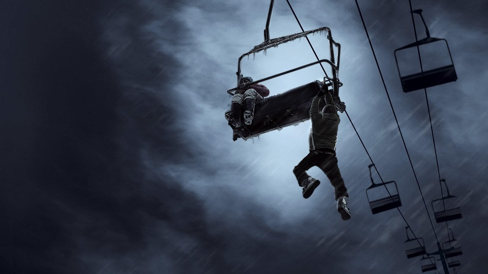
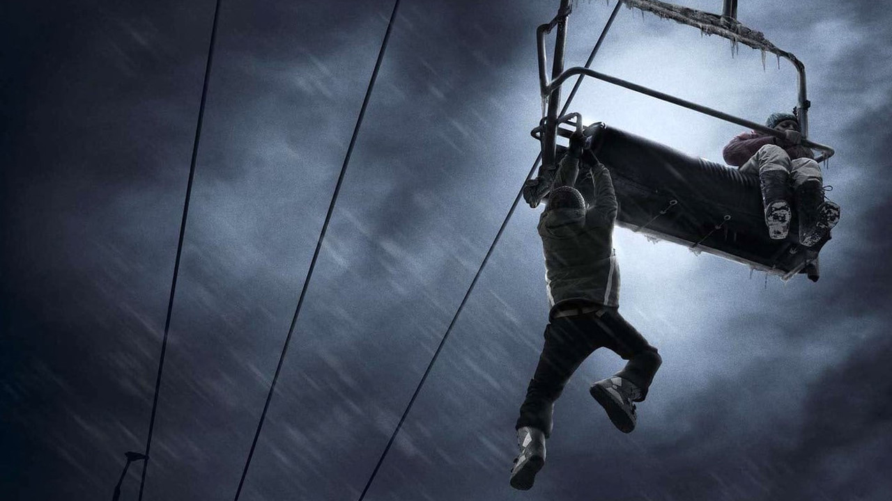
导演与主创 · 他们的历史作品
 X战警：逆转未来
X战警：逆转未来 X战警2
X战警2短评（轻微剧透）
轻微剧透：真正的转折在丹跳下去之后——他没摔死，摔断了腿，于是「要不要下去」从一个理论问题变成了算术题。轻微剧透：格林最有效的一处是把恐怖做成高度：这不是躲鬼片，是「离地五十英尺」这件事本身在杀人。结尾帕克顺着雪板往下滑那段，是全片唯一一次让摄影机跟着人一起离开那把椅子。
为什么值得一看
想看「一个念头能撑满九十分钟」的人；能接受人物决策会让你着急、台词一般、狼的部分有点刻意的观众。R 级，含动物撕咬与断肢画面，恐高与畏寒者慎看。内地未映。看完想继续：《鲨滩》《一切尽失》《人狼大战》。
人狼大战 The Grey
「一次，就这样。就这样。」
剧情梗概
阿拉斯加一处石油作业点。飞机在暴雪里掉了下来，活下来七个人，都是干重活、坐过牢、或者想消失的那种人。护猎员约翰·奥特维知道这里的狼：这是它们的地盘，人是闯进来的。他带着剩下的人往南走，穿过树林、河床和雪线，而狼群一直跟在后面。
亮点
- 乔·卡纳汉自编自导并任制片，改编自伊恩·麦肯齐·杰弗斯的短篇《鬼魂行者》；这是他拍得最收敛的一部。
- 成本约 2500 万美元，北美票房约 5170 万美元，全球约 8100 万美元。
- 连姆·尼森演奥特维，一个在开场那封信里就已经决定不回去的人；弗兰克·格里罗演迪亚兹，全片唯一一个一直跟他硬碰硬的人。
- 影片大量外景在不列颠哥伦比亚与阿拉斯加实拍，剧组在零下二十多度的雪原上工作了数周；狼由真狼与特效结合完成。
- 正片在片尾字幕之前就停了——字幕中间还藏着一段很短的镜头，第一次看的人很容易以为片子坏了。
- 豆瓣 6.5 / 烂番茄 79% / Metacritic 64 / IMDb 6.7：本期豆瓣与专业评价落差最大的一部（豆瓣 6.5，烂番茄却有 79%）。
导演与主创 · 他们的历史作品
 天龙特攻队
天龙特攻队
 辛德勒的名单
辛德勒的名单 星球大战1：幽灵的威胁
星球大战1：幽灵的威胁 飓风营救
飓风营救 蝙蝠侠：侠影之谜
蝙蝠侠：侠影之谜 人类清除计划3
人类清除计划3 美国队长2
美国队长2短评（轻微剧透）
轻微剧透：真正的转折在他们发现狼不是来吃人的，是在把人往回赶——从那一刻起，这部片的问题从「怎么活」变成了「往哪走」。轻微剧透：卡纳汉把每个人的死都拍得很短：没有遗言、没有慢镜、没有配乐，说完就走。结尾奥特维最后那一下，是全片唯一一次让「活着」和「不活着」变成同一个选择。
为什么值得一看
想看「男性群戏能被拍得多不热血」的人；能接受节奏偏慢、人物更像类型而不是角色、结局刻意留白的观众。R 级，含暴力与动物袭击画面，建议高中以上观看。内地未映。看完想继续：《荒野猎人》《天劫余生》《一切尽失》。
八恶人 The Hateful Eight
「这屋里有一个人在撒谎。找出是谁。」
剧情梗概
怀俄明的雪原上，赏金猎人约翰·鲁斯押着犯人黛西·多默格，要去红石镇领赏。路上先后搭上两个人：同为赏金猎人的沃伦少校，和自称新任警长的马尼克斯。暴风雪太猛，五个人挤进米妮男装店避雪，店里已经有四个人在等——他们都说自己是路过。八个人，一间屋子，一把枪在桌子下面。
亮点
- 昆汀·塔伦蒂诺自编自导，这是他的第八部长片；剧本曾在网络泄露，他一度搁置，改成舞台剧朗读之后才重新开拍。
- 成本约 4400 万美元，全球票房约 1.556 亿美元；奥斯卡三项提名，埃尼奥·莫里康内凭本片拿到他唯一一座奥斯卡最佳原创配乐。
- 影片用 65mm 胶片（Ultra Panavision 70）拍摄，是 1985 年之后第一部用这套规格大规模放映的故事片。
- 塞缪尔·杰克逊演沃伦少校，库尔特·拉塞尔演鲁斯；詹妮弗·杰森·李演黛西，凭这个角色拿到奥斯卡最佳女配角提名。
- 全片分五章，中间有一段旁白式的回述；塔伦蒂诺把暴风雪山庄模式整个搬进了西部片。
- 豆瓣 8.7 / 烂番茄 75% / Metacritic 68 / IMDb 7.8：本期豆瓣并列最高，与《南极大冒险》同为 8.7，也是本期片长最长的一部（168 分钟）。
导演与主创 · 他们的历史作品

 低俗小说
低俗小说 被解救的姜戈
被解救的姜戈 无耻混蛋
无耻混蛋 杀死比尔
杀死比尔 低俗小说美国队长2
低俗小说美国队长2 惊奇队长
惊奇队长 王牌特工：特工学院
王牌特工：特工学院
 金刚不坏
金刚不坏 银河护卫队2
银河护卫队2 纽约大逃亡
纽约大逃亡短评（轻微剧透）
轻微剧透：真正的转折不在谁拔了枪，在中间那章回述——它把前半段你以为的偶然全都改成了安排，而你看完只能承认自己被摆了一道。轻微剧透：塔伦蒂诺把八个人锁在一间屋子里，靠的不是枪，是话：每多说一句，屋里的立场就重排一次。结尾两个人对着念那封信，是全片唯一一次让暴力停下来的地方。
为什么值得一看
想看「话痨悬疑能撑三个小时」的人；能接受大量冒犯性台词、血浆来得突然、前三章节奏偏慢的观众。R 级，含大量暴力与粗口，建议成年观看。内地未映，流媒体可看。看完想继续：《被解救的姜戈》《无耻混蛋》《落水狗》。
荒野猎人 The Revenant
「只要还能喘气，就接着打。」
剧情梗概
1823 年，皮草猎人休·格拉斯在密苏里河上游被一头灰熊撕成重伤。队里留下三个人照顾他：船长的雇工菲茨杰拉德、年轻的布里杰，还有格拉斯的儿子霍克。菲茨杰拉德只想赶紧走，他杀死了霍克，把格拉斯拖进坑里埋了半截。格拉斯自己爬了出来，然后往南走了两百英里。
亮点
- 亚历杭德罗·冈萨雷斯·伊尼亚里图自编自导并任制片，改编自迈克尔·庞克 2002 年的同名小说；这是他连庄奥斯卡最佳导演的第二年（前一年是《鸟人》）。
- 成本约 1.35 亿美元，全球票房约 5.33 亿美元；奥斯卡 12 项提名、拿下 3 座（最佳导演、最佳男主角、最佳摄影）。
- 全片只用自然光拍摄，摄影是艾曼努尔·卢贝兹基；剧组为了追光每天只有几小时能拍，实际拍摄周期超过九个月。
- 莱昂纳多·迪卡普里奥凭本片拿到他第一座奥斯卡最佳男主角；汤姆·哈迪演菲茨杰拉德，拿到最佳男配角提名。
- 拍摄地最后从加拿大一路换到阿根廷火地岛——原来的雪不够了，剧组追着雪走。
- 豆瓣 7.9 / 烂番茄 78% / Metacritic 76 / IMDb 8.0：本期 Metacritic 最高（76），IMDb 与《荒野生存》并列本期第一。
导演与主创 · 他们的历史作品
 鸟人
鸟人 通天塔21克
通天塔21克 爱情是狗娘
爱情是狗娘
 盗梦空间泰坦尼克号
盗梦空间泰坦尼克号 华尔街之狼
华尔街之狼 禁闭岛
禁闭岛
 疯狂的麦克斯4：狂暴之路
疯狂的麦克斯4：狂暴之路 毒液：致命守护者
毒液：致命守护者 毒液2盗梦空间
毒液2盗梦空间短评（轻微剧透）
轻微剧透：真正的转折不在那头熊，在那句「他儿子在哪」——从那一刻起，格拉斯不是要活，是要回去。轻微剧透：伊尼亚里图最狠的一处是把复仇追到了最后又松手：那句「复仇在上帝手里」不是和解，是他终于走不动了。结尾格拉斯的呼吸声，是全片唯一一次让摄影机离开雪原、只看着他。
为什么值得一看
想看「自然光能拍出什么」的人；能接受 156 分钟、台词极少、暴力与寒冷都拍得很直的观众。R 级，含大量血腥与暴力画面，建议成年观看。内地公映过（删减版），流媒体可看。看完想继续：《荒野生存》《人狼大战》《北壁》。
绝命海拔 Everest
「我们把客户带到八千米，就得把他们带下来。」
剧情梗概
1996 年 5 月 10 日，珠穆朗玛峰。两支商业登山队——罗布·霍尔的「冒险顾问」与斯科特·费舍尔的「山痴」——在同一天冲顶。那天山上挤了三十多个人，排队通过希拉里台阶，比原计划晚了两个小时。下午风暴上来的时候，还有人在上面。
亮点
- 巴塔萨·科马库导演，改编自乔恩·克拉考尔 1997 年的《进入空气稀薄地带》与贝克·韦瑟斯的回忆录；这是他第一次拍英语大片。
- 成本约 5500 万美元，全球票房约 2.034 亿美元，是科马库生涯商业成绩最好的一部。
- 剧组在尼泊尔与意大利的阿尔卑斯山实景拍摄，还在松林制片厂搭了昆布冰瀑与希拉里台阶的等比例模型。
- 杰森·克拉克演罗布·霍尔，乔什·布洛林演贝克·韦瑟斯，杰克·吉伦哈尔演斯科特·费舍尔；凯拉·奈特莉与罗宾·怀特演留在家里等的人。
- 影片上映后，1996 年那场山难的幸存者与家属对部分改编提出过异议；片尾字幕列出了八名遇难者的名字。
- 豆瓣 7.5 / 烂番茄 73% / Metacritic 64 / IMDb 7.1：本期四个平台分数最平均的一部，都落在中上区间。
导演与主创 · 他们的历史作品
 双龙出手
双龙出手 猩球崛起2：黎明之战
猩球崛起2：黎明之战 终结者：创世纪
终结者：创世纪 猎杀本·拉登
猎杀本·拉登
 死侍2
死侍2 复仇者联盟3：无限战争
复仇者联盟3：无限战争 匪帮传奇
匪帮传奇短评（轻微剧透）
轻微剧透：真正的转折不在风暴，在那个下午两点——每个人都被告知过「两点必须下撤」，而那天连最有经验的向导也往上走了。轻微剧透：科马库把这部片拍成了一次「流程失控」的复盘：谁在等氧、谁在等绳、谁在等一个电话，越往上走，每一个等待都在变贵。结尾霍尔在卫星电话里跟妻子说话那段，是全片唯一一次让海拔这件事安静下来。
为什么值得一看
想看「登山片怎么被拍成一次事故调查」的人；能接受人物众多、前四十分钟几乎都在讲准备、部分情感戏常规的观众。PG-13，含冻伤与遇难画面，建议高中以上观看。内地公映过，流媒体可看。看完想继续：《北壁》《垂直极限》《天劫余生》。